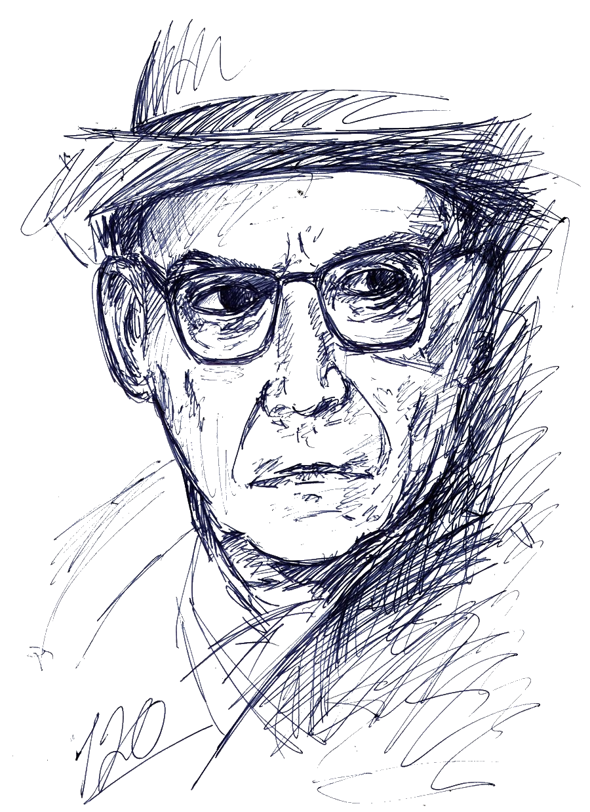

Иво Андрић
Наша школа носи име писца који је Нобелову награду донео српској књижевности, и који је и сам живео у Бриселу, радећи у дипломатској служби Краљевине Југославије.
„Јер сви ми умиремо само једном а велики људи по два пута: једном када их нестане са земље а други пут кад пропадне њихова задужбина.” Иво Андрић · На Дрини ћуприја

Фотографије
Из живота писца
Кликните на слику за увећани приказ.
Сазнајте више